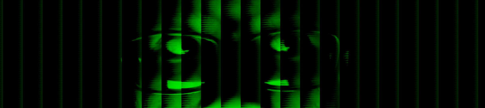

# Tentang
Panggil aku Danendra Eganatha Syashamaauren jika kamu merasa formal, Ega jika kamu merasa kenal aku. Kamu bisa melihat bahwa mukaku terlihat hijau dan glitchy karena alasan tertentu. Aku tidak tahu penyebabnya, mungkin karena aku suka dengan warna hijau. Bagi yang tidak tahu hijau dalam bahasa spanyol adalah verde. Kenapa aku memberitahumu hal ini? Karena aku kehabisan ide dan ingin membuat paragraf ini sepanjang mungkin.
## Personal
Jika kamu merasa sedikit personal aku tinggal di Indonesia, Jawa Tengah. Hobiku kebanyakan adalah memprogram, desain grafis, audiofil, semi papan tik-fil (keyboard-philes), dan menggambar. Sebelumnya aku adalah jurnalis sebagai eskul SMP-ku. Untuk sekarang (SMK) eskulku adalah Softare/IT dan Klub Literasi.
### Bagaimana aku melakukan hal-hal
Aku melakukan komputerisasi dengan menggunakan Laptopku dan jika aku merasa sedikit bebas mungkin komputerku dirumah. SO (Sistem Operasi) utamaku kebanyakan mirip-UNIX. Seperti GNU/Linux, rasanya lebih spesifik, dan distribusi yang saya pakai adalah Arch Linux untuk komputerku dirumah, dan Fedora Workstation XX untuk laptopku. Catatan: XX artinya kemungkinan Fedora menyiapkan versi mayornya setiap 6 bulan. Aku juga dualboot dengan Microsoft® Windows 11 di komputerku dan Windows 10 di laptopku, untuk cadangan.
## Situs ini
Situs ini adalah tipe situs portofolio. Aku membuatnya se-aneh mungkin agar terlihat keren bagi yang tertarik dan tidak semenarik mungkin bagi yang tidak tertarik. Aku membuat situs portofolio ini untuk penilaian tengah semesterku, atau lebih dari itu, siapa tahu?